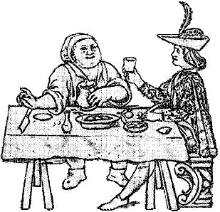

"Now Gentlemen Readers, or all of what degree so
ever, that
doe read this, I pray you all to take notice that you are my Guests,
for
the entertainment and Dyet you are like to have, I pray take it in good
part."
Quotations from Taylor's Feast,
1638

Need
a good laughe? Hungry for a jape or two? Then step into
the Kitchen
of Mirth where the table is set with humorous tales of cooks,
kitchens,
food, dining & eating, from both period & secondary sources.
Here
you will read of the miserly old Tanner and his pudding-pie, learn how
to make your master a foole, see how 200 cooks prepare cheese for a
wedding,
and follow the adventure of poor old fat Gent and his unlucky Posset.
Some
of these tales may be a bit bawdy but all are wonderful examples of the
humor of their time and are proof that throughout the ages, mirth is
king
at the dinner table.
A Bill of Fare - "A
Bill
of Fare, invented
by the choisest Pallats of our time, both for Worth and Wit, wherein
are
appointed such Rare and Admirable Dishes, as are not to bee had every
where..."
A Chyne of Beefe roasted -
"A
Faire Chyne
of Beefe was once given to Mr. John Fletcher, (the poet) he pray'd his
Hostesse, (being an old woman neere the Bank-side, where he lodged) to
salt it well seven or eight daies..."
A cup of Sacke - "Now
it
is but folly
to offer a little Sacke to my Readers, for it is not a little or small
Sack that can hold them; yet for all that they may hold or contayne a
little
Sacke..."
A cup of small Beere - "A
Gentleman that
dwelt tenne miles from London, sent his Footman in all haste to the
Citty,
to tell a Merchant welcome newes of a rich Unkle of his lately dead,
that
had left him somewhat to make him merry for his Death, with an out-side
mourning in Blacke, and an in-side laughing with Sacke..."
A Foole and A Tale of a Foole
- "To furnish
a Feast compleatly, there must be Tarts, Custards, Flawnes,
Flap-jackets,
and by al meanes a Foole or two..."
A fresh Salmon - "The
good, old, and
truely right Honourable Charles Earle of Nottingham, Lord High Admirall
of England, whose renowned memory shall nver bee forgotten untill his
bounteous
Houskeeping bee generally imitated..."
A Leicester-shire Frolick; Or,
The
valiant Cook-Maid
- "Being a merry composed jest of Five Taylors that had been at
work
till their Wages came to 5 pounds, likewise a merry conceited Cook-maid
that lived in the house, went to her Master and desired him to lend her
a horse, and she would venture her skill to take the 5-pound from these
five Taylors, without either Sword or Pistol, in a jesting way..."
A messe of Mustard - "Three
Gentlemen
of the ancient race of Redsbanks, (now called Highland-men, because
they
inhabite in the Mountaynous parts of the North of Scotland) these three
having occasion to come into England..."
A Pigge - "A Collier,
neere Croyden,
having loaden his Cart with Coales for London, a woman that dwelt neare
him that was Nurse to a Marchants child of the City, desired the
Collier
to remember her humble service to her Maister and Mistresse..."
A Posset - "The
Kings-Head
Taverne in
Fleet-street, at Chancery-lane end, hath a long time bin a contenting
well-custom'd
House..."
A Pudding-pye - "An
old
rich Tanner,
with a beggerly minde, did use Hartfourd Market constantly every
Weeke..."
A Spitch-cocke, or roasted
Eele
turn'd to a
Bull - "There was a great Dispute held amongst good fellows
once,
of what thing in the world would live longest after exquisite and
extreame
Torments: the Judgement was generall, that it was an Eele..."
Cheese - "One brag'd
and
boasted that
when he was married, that he had at least two hundred Cookes to dresse
his Wedding Dinner..."
Musicke - "Three of
foure
Gentlemen being
merry with drinke and discourse in a Taverne, a Musitian proffer'd them
Musicke, which was deny'd, within a little time after another ask'd the
same question, Gentlemen, will you have any Musicke..."
Powderd Beefe and Cabbage
- "A
Water-man
(now living) named Gilford, dwelt on the Bank-side, and comming home to
his Dinner, which was Beefe and Cabbage..."
Puddings and Sawsadges - "The
Pudding
and the Sawsadges will bee cold Gentlemen, if you doe not fall to, and
then they will not be worth a sir-reverance; and methinks it is an
easie
peece of Logick, to prove a Pudding to bee a perpetuall motion, for it
is alwayes moving..."
Strong Beere - "Two
soldiers of old acquaintance,
having beene long asunder, chanced to meete, and after salutations they
agree'd to enter an Ale-house..."
Twelve Woodcockes in a Dish
- "About
sixe or seaven new molded Gallants, (whose outsides were silke and
slashes,
and their insides jeeres and flashes) were invited to a worthy
cittizens
House to dinner, where amongst a great deale of other good cheare,
there
was brought to the Board a Jury of Woodcockes in one Dish..."
Venison
and Wine - "A
Gentleman dwelt
two miles from a Market-towne, where (at a Taverne) hee caused some
bottles
of Wine to be fill'd to carry home, because he had invited some friends
to his house to eate a Venison Pasty with him the next day..."
Looking for something specific at Gode Cookery? Search Gode Cookery courtesy of Master.com
.
Gourmet medieval & Renaissance cookies from Gode
Cookery, perfect
for feasts, weddings, receptions, & more. In dozens of delightful
&
authentic designs.


 The
Kitchen of Mirth
The
Kitchen of Mirth